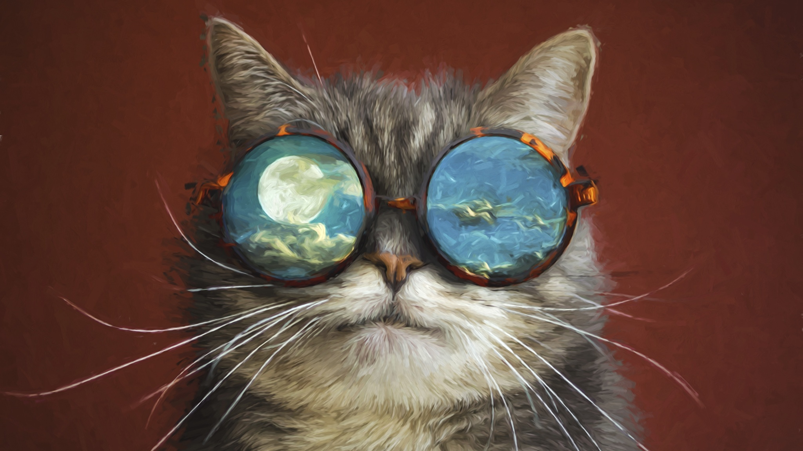

Сложно поверить, что эта "рапунцель" - представитель древней охотничьей породы.

Немного о борзых с историей
Мечтательный какой-то, правда?
Отражение в линзах очков напоминает о Ван Гоге. Он как раз любил рисовать ночное небо. Вот ссылки на его картины